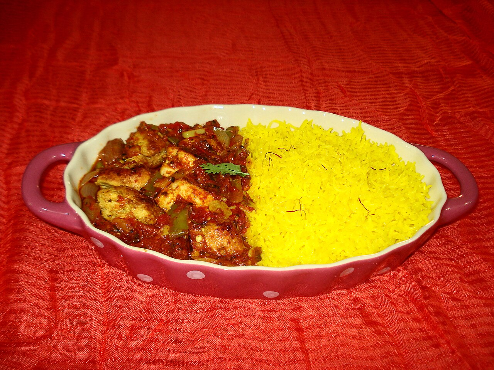

Charcoal Tandoori Roasts
Meats marinated in cultured yogurt, ginger-garlic paste, and Kashmiri chilies, lowered on long steel skewers into roaring 800-degree tandoor ovens for blistered perfection.
Explore Tandoor Craft →Welcome to Saffron Indian Cuisine, Southwest Charlotte’s premier sanctuary for authentic Indian gastronomy in the heart of Ayrsley Town Center. Named for the world’s most precious spice, we honor royal culinary traditions with 800-degree clay-oven tandoori roasts, velvet Chicken Tikka Masala, hand-stretched garlic naan, and richly layered aromatic biryanis.

Every dish balances aromatic spice blends, slow braising, and traditional clay-oven mastery.
Meats marinated in cultured yogurt, ginger-garlic paste, and Kashmiri chilies, lowered on long steel skewers into roaring 800-degree tandoor ovens for blistered perfection.
Explore Tandoor Craft →Velvety Chicken Tikka Masala, slow-braised Lamb Rogan Josh, rich Butter Chicken, and Paneer Tikka Masala prepared with slow-caramelized onions, tomato gravy, and ground spices.
Discover Curry Craft →Leavened dough slapped by hand onto scorching clay tandoor walls, blistering instantly into fluffy Garlic and Saffron Butter Naan, paired with vibrant vegan and vegetarian specialties.
View Naan & Breads →2135 Ayrsley Town Blvd, Suite B, Charlotte NC 28273. Conveniently located in Ayrsley Town Center with abundant parking. Join us for business lunches, weekend family dinners, or convenient takeout.
Hours & Location Directives →